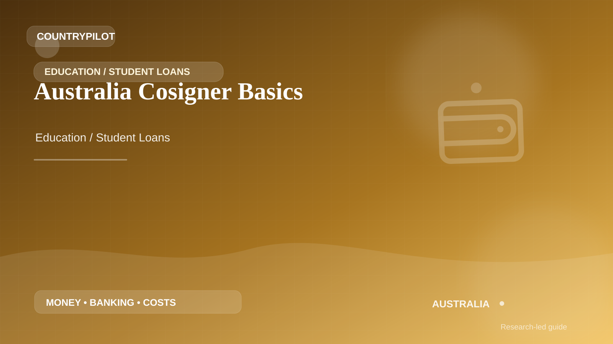

AustraliaAustralia · Education / Student Loans
Australia Cosigner Basics
If you are considering cosigner basics for study connected with Australia, treat the loan as a long-term financial contract rather than a way to make the tuition invoice disappear. This guide looks at eligibility, co-signer rules, interest and fees, currency risk, disbursement, grace periods and repayment stress-testing before a student signs.